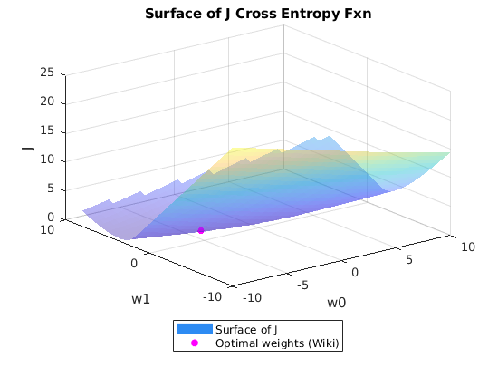
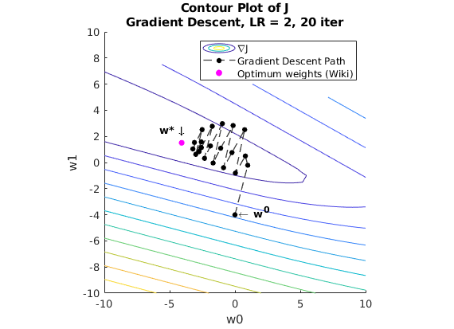
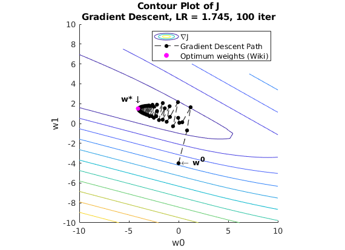

Contents
clear all, close all, clc;
data_filename = 'student_data.csv';
data_table = rows2vars(readtable(data_filename,'ReadRowNames',true));
hours = data_table.Hours;
pass_fail = data_table.Pass;
N = size(data_table, 1);
wiki_w0 = -4.0777;
wiki_w1 = 1.5046;
Part 1. Plotting the contour map of the cross-entropy cost fxn J
w0max = 10;
w1max = 10;
w0_range = -w0max:0.5:w0max;
w1_range = -w1max:0.5:w1max;
[W0, W1] = meshgrid(w0_range, w1_range);
J = zeros(size(W0));
for w0_ind = 1:length(w0_range)
for w1_ind = 1:length(w1_range)
w0 = w0_range(w0_ind);
w1 = w1_range(w1_ind);
fx = 1 ./ (1 + exp(-w0 - (w1 .* hours)));
wiki_fx = 1 ./ (1 + exp(-wiki_w0 - (wiki_w1 .* hours)));
J_temp = 0;
wiki_J_temp = 0;
for i = 1:N
J_temp = J_temp + (pass_fail(i)*log(fx(i)) + (1 - pass_fail(i))*log(1-fx(i)));
wiki_J_temp = wiki_J_temp + (pass_fail(i)*log(wiki_fx(i)) + (1 - pass_fail(i))*log(1-wiki_fx(i)));
end
J(w1_ind, w0_ind) = (-1/N)*J_temp;
wiki_J = (-1/N)*wiki_J_temp;
end
end
figure();
surf(W0, W1, J,'EdgeColor','none', 'FaceAlpha', .4);
hold on;
scatter3(wiki_w0, wiki_w1, wiki_J, 30,'magenta','filled');
title('Surface of J Cross Entropy Fxn');
xlabel('w0')
ylabel('w1')
zlabel('J')
legend({'Surface of J','Optimal weights (Wiki)'},'location','southoutside')
hold off;
figure();
hold on;
contour(W0, W1, J);
title({'Contour Plot of J','Gradient Descent, LR = 2, 20 iter'});
xlabel('w0')
ylabel('w1')
zlabel('J')
axis square
Part 2. Performing Gradient Descent on J (learning rate = 2, 20
iterations)
dL = 2;
gd_iter_max = 20;
init_camp = [0, -4];
camp_coords = zeros([gd_iter_max+1, 2]);
camp_coords(1,:) = init_camp;
for gd_iter = 1:1:gd_iter_max
w0_current = camp_coords(gd_iter, 1);
w1_current = camp_coords(gd_iter, 2);
delJ_w0 = 0;
delJ_w1 = 0;
for i = 1:N
delJ_w0 = delJ_w0 + (-pass_fail(i)) * (1/(1 + exp(w0_current + w1_current * hours(i)))) + (1 - pass_fail(i))* (1/(1 + exp(-w0_current - w1_current * hours(i))));
delJ_w1 = delJ_w1 + hours(i) * (-pass_fail(i) * (1/(1 + exp(w0_current + w1_current * hours(i)))) + (1 - pass_fail(i))* (1/(1 + exp(-w0_current - w1_current * hours(i)))));
end
delJ_w0 = (1/N) * delJ_w0;
delJ_w1 = (1/N) * delJ_w1;
camp_coords(gd_iter + 1, :) = [(w0_current - dL * delJ_w0), (w1_current - dL * delJ_w1)];
end
disp('Final "camp" coords [w0, w1] with learning rate 2: ')
disp(camp_coords(end,:));
gd1 = plot(camp_coords(:,1),camp_coords(:,2));
gd1.LineWidth = 1;
gd1.LineStyle = '--';
gd1.Color = [0.25 0.25 0.25];
gd1.MarkerSize = 4;
gd1.Marker = 'o';
gd1.MarkerEdgeColor = 'black';
gd1.MarkerFaceColor = 'black';
scatter(wiki_w0, wiki_w1, 30,'magenta','filled');
xtext = [wiki_w0 - 1.7, init_camp(1) + .25];
ytext = [wiki_w1 + 1, init_camp(2) + .15];
str = {'\bfw* \downarrow ', '\leftarrow \bfw^0'};
text(xtext,ytext,str)
legend({'\nablaJ','Gradient Descent Path','Optimum weights (Wiki)'})
hold off;
figure();
hold on;
contour(W0, W1, J);
title({'Contour Plot of J','Gradient Descent, LR = 1.745, 100 iter'});
xlabel('w0')
ylabel('w1')
zlabel('J')
axis square
Part 3. Performing Gradient Descent on J (learning rate = best for 100
iterations)
dL = 1.745;
gd_iter_max = 100;
init_camp = [0, -4];
camp_coords = zeros([gd_iter_max+1, 2]);
camp_coords(1,:) = init_camp;
for gd_iter = 1:1:gd_iter_max
w0_current = camp_coords(gd_iter, 1);
w1_current = camp_coords(gd_iter, 2);
delJ_w0 = 0;
delJ_w1 = 0;
for i = 1:N
delJ_w0 = delJ_w0 + (-pass_fail(i)) * (1/(1 + exp(w0_current + w1_current * hours(i)))) + (1 - pass_fail(i))* (1/(1 + exp(-w0_current - w1_current * hours(i))));
delJ_w1 = delJ_w1 + hours(i) * (-pass_fail(i) * (1/(1 + exp(w0_current + w1_current * hours(i)))) + (1 - pass_fail(i))* (1/(1 + exp(-w0_current - w1_current * hours(i)))));
end
delJ_w0 = (1/N) * delJ_w0;
delJ_w1 = (1/N) * delJ_w1;
camp_coords(gd_iter + 1, :) = [(w0_current - dL * delJ_w0), (w1_current - dL * delJ_w1)];
end
disp('Final "camp" coords [w0, w1] with learning rate 1.745: ')
disp(camp_coords(end,:));
gd2 = plot(camp_coords(:,1),camp_coords(:,2));
gd2.LineWidth = 1;
gd2.LineStyle = '--';
gd2.Color = [0.25 0.25 0.25];
gd2.MarkerSize = 4;
gd2.Marker = 'o';
gd2.MarkerEdgeColor = 'black';
gd2.MarkerFaceColor = 'black';
scatter(wiki_w0, wiki_w1, 30,'magenta','filled');
xtext2 = [wiki_w0 - 1.7, init_camp(1) + .25];
ytext2 = [wiki_w1 + 1, init_camp(2) + .15];
str2 = {'\bfw* \downarrow ', '\leftarrow \bfw^0'};
text(xtext2,ytext2,str2)
legend({'\nablaJ','Gradient Descent Path','Optimum weights (Wiki)'})
hold off;
Final "camp" coords [w0, w1] with learning rate 2:
-3.1025 1.5374
Final "camp" coords [w0, w1] with learning rate 1.745:
-4.0498 1.5100
  